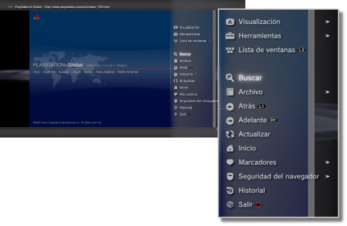

Red > Funcionamiento básico del navegador de Internet
Funcionamiento básico del navegador de Internet
Visualización de la pantalla

(1) |
Título de la página |
|---|---|
(2) |
Dirección de la página |
(3) |
Icono de SSL |
(4) |
Icono de ocupado |
(5) |
Icono de seguridad del navegador |
(6) |
Dirección del vínculo de destino |
(7) |
Puntero |
Métodos de desplazamiento
| Botones direccionales | Mueven el puntero hacia un vínculo. |
|---|---|
| Joystick derecho | Permite desplazarse en la dirección deseada. |
Uso del menú
Si pulsa el botón  se mostrará el menú, en el que podrá realizar distintas operaciones y ajustes. Es posible mostrar u ocultar el menú si pulsa el botón . Los elementos del menú variarán según se encuentre en los modos navegación o ventana.
se mostrará el menú, en el que podrá realizar distintas operaciones y ajustes. Es posible mostrar u ocultar el menú si pulsa el botón . Los elementos del menú variarán según se encuentre en los modos navegación o ventana.

Introducir una dirección (URL)
Al pulsar el botón START, se muestra un teclado para que pueda introducir una dirección. Si selecciona  después de introducir la dirección, el teclado se cierra y se abre la página de la dirección introducida.
después de introducir la dirección, el teclado se cierra y se abre la página de la dirección introducida.
Copia de texto
Es posible copiar texto de una página del navegador de Internet.
1. |
Utilice el joystick izquierdo para desplazar el puntero a la ubicación del texto que quiere copiar y, a continuación, pulse el botón |
|---|---|
2. |
Mantenga pulsado el botón |
3. |
Suelte el botón |
4. |
Seleccione [Copiar] en el menú que se muestra. |
Notas
- Puede pegar el texto que ha copiado mediante el botón [Pegar] del teclado en pantalla.
- Si selecciona [Buscar] en el paso 4, puede utilizar el texto copiado como palabra clave para realizar una búsqueda en Internet.
Impresión de una página Web
Para utilizar esta función, primero debe seleccionar  (Ajustes) > [Ajustes de impresora] > [Selección de impresora] para configurar una impresora.
(Ajustes) > [Ajustes de impresora] > [Selección de impresora] para configurar una impresora.
1. |
Abra la página web que desee imprimir y, a continuación, pulse el botón |
|---|---|
2. |
Seleccione [Archivo] > [Imprimir esta pantalla]. |
3. |
Compruebe los ajustes de impresión. |
4. |
Seleccione [Imprimir]. |
Nota
Las impresoras que se pueden utilizar varían en función del país o la región. Si desea obtener más información, visite el sitio web de SIE de su región.
Abrir varias ventanas
Es posible abrir varias ventanas al mismo tiempo. Con el puntero situado encima del vínculo, mantenga pulsado el botón  hasta que el vínculo se abra en otra ventana.
hasta que el vínculo se abra en otra ventana.